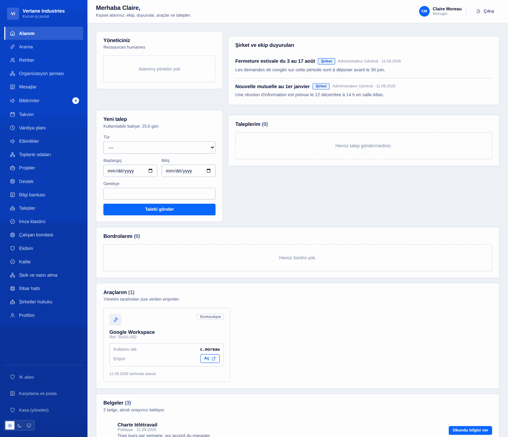
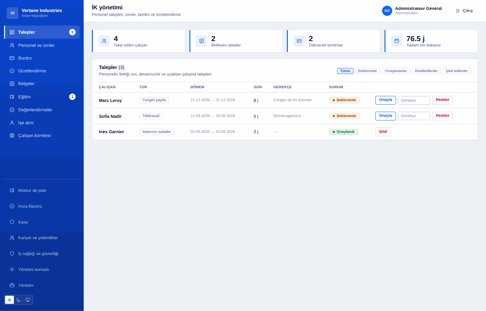
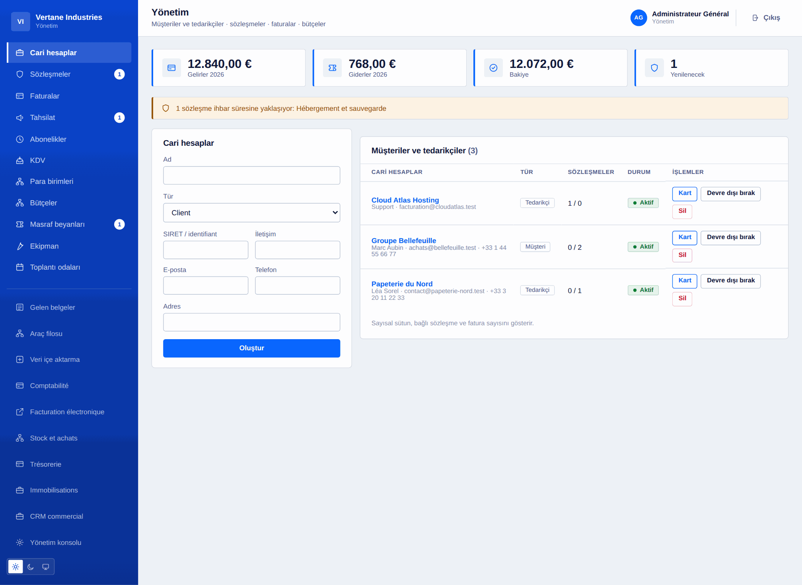
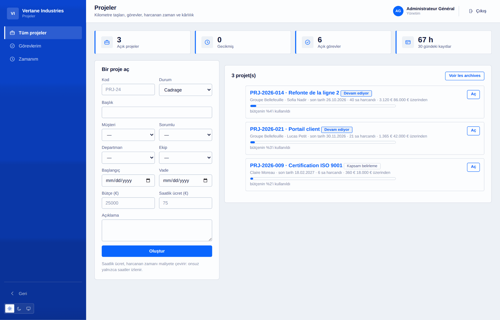
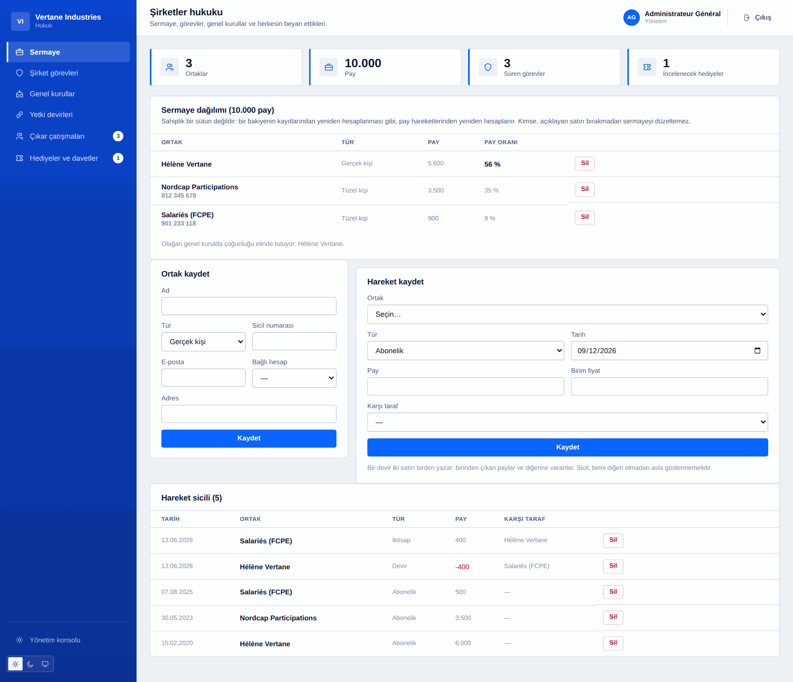

Toutadmin'in yapabildiği her şey
Alan alan tam liste. Her satır teslim edilmiş ve test edilmiş koda karşılık gelir, bir niyete değil.
121 · «Modül» işaretli işlevler gerektiğinde konsoldan açılır.
Temel ve organizasyon
Geri kalanı taşıyan şey: hesaplar, bağlılıklar ve tüm alanların paylaştığı sözlük.
- Hesaplar ve birleşebilen roller: yönetici, İK, mali işler, bilgi işlem, bildirim sorumlusu
- Yönetici sıfatı gerçek bağlılıktan türetilir, elle asla verilmez
- Birimler ve ekipler, alan başına birden çok yönetici, bağlılıklar her istekte yeniden okunur
- Görsel organizasyon şeması, yönetim dahil, ve hiçbir yere bağlı olmayan kişiler
- Arama ve süzgeçli rehber, görünürlüğü yalnızca yönetim belirler
- İç mesajlaşma ve yönetimce yapılandırılan kurumsal adres
- Kaynakta ayrılmış genel arama: görmeye hakkınız olmayan aranmaz bile
- Kişi başına bildirim merkezi, okundu bilgisiyle
- CSV toplu içe aktarma: denetlenmiş önizleme, ya hep ya hiç yazma
- Kurulum sihirbazı, kurulum ayarları, açılabilir yedi modül
- 16 dil, 3 palet, açık/koyu/sistem teması, uyarlanabilir arayüz

Çalışan alanı
Herkesin sabah açtığı sayfa: kendisini ilgilendiren şeyler, başka bir şey değil.
- Kişisel panel: yönetici, duyurular, talepler, onaylanacak belgeler
- İzin, mazeret, devamsızlık ve uzaktan çalışma: iş günleri hesaplanır, hafta sonları dışlanır
- Güncel izin bakiyesi, gerekçeli düzeltmelerin geçmişi
- Bordrolar görüntülenebilir ve kasada elli yıl saklanır
- Kişisel ajanda ve paylaşılan ekip ajandası
- Haftalık çalışma planı, nöbetler, sürekli görevler
- Kendi kullanıcı adıyla atanmış araçlar — hiçbir üçüncü taraf parolası saklanmaz
- Profil: fotoğraf, tanıtım, telefon, dil, parola, tüm oturumları kapatma
- Serbest çalışanlar için kronometreyle zaman kaydı, aynı anda yalnızca bir tane
- Çıkar ve hediye bildirimi, yalnızca kendine görünür

İnsan kaynakları
Çalışanın dosyası, gelişinden ayrılışına, beraberinde getirdiği vadelerle.
- Bakiyeden düşerek talep onayı, gerekçeli ret, günleri geri veren iptal
- Bordrolar: oluşturma, ödeme takibi, toplu üretim
- Adına okundu bilgisiyle şirket belgeleri
- Eğitim: katalog, oturumlar, kayıtlar, maliyet ve süre
- Yıllık görüşmeler: kampanya, şablon, tutanak
- Giriş ve çıkış: izlenen kontrol listeleri, görev başına sorumlu ve süre
- Yetkinlikler ve yetki belgeleri, yenileme tarihi ve önceden uyarı ile
- Birebir görüşmeler: paylaşılan özet, yöneticinin notları ayrı tutulur
- Ayrılıştan sonra da erişilebilen dijital kasa, parmak iziyle mühürlenmiş belgeler
- Basit elektronik imza: sıralı akış, parmak izi, mühür, belge
- Belirli süreli sözleşmeler: hesap gününde kendiliğinden kapanır

İşe alım ve yetenek
Başvurudan ilk güne, arada hiçbir hesap tablosu olmadan.
- İş ilanları ve aşama aşama izlenen başvurular
- Özgeçmiş alımı: PDF, DOCX veya metin, depo dışına yazılır
- İçerik çıkarma ve aranabilir özgeçmiş havuzu
- Ağırlıklı ölçütler, puan, eşik, başvuru sıralaması
- Kabul edilen aday doğrudan işe giriş yoluna geçer
- İç anketler ve çalışan barometresi, yapısı gereği anonim
- Beş yanıtın altında hiçbir sonuç gösterilmez

İş sağlığı, güvenliği ve temsil
Yazılı tutulması gereken ve kendini hatırlatan yükümlülükler.
- Risk değerlendirmesi: çalışma birimleri, tehlikeler, puanlama, önlemler, tarihli gözden geçirme
- İş kazaları ve ramak kala olayları kaydı, iş göremezlik günleri
- Koruyucu donanım: adına teslim, geçerlilik süresi, yenileme
- Sağlık muayeneleri: işe giriş, periyodik, işe dönüş, talep üzerine
- Temsil: seçimler, seçmen listesi, anonim oylama, görevler ve sona ermeleri
- Kurul toplantıları, çalışanlara sağlanan haklar ve hizmetler
- Yönetim alanı görev süresi bitince kendiliğinden kapanır

Finans ve idare
Üçüncü taraflar, sözleşmeler, giren para ve çıkan para.
- Müşteriler ve tedarikçiler, tam kayıt: kişiler, sözleşmeler, faturalar
- Sözleşmeler ve özellikle ihbar süreleri: fesih için son tarih hesaplanır ve uyarılır
- İki yönde faturalar, KDV dahil tutar hesaplanır, gecikme vadeden türetilir
- Birim ve mali yıl bazında bütçeler, harcama otomatik toplanır
- Masraf beyanları: sunum, onay, ödeme — biri olmadan diğeri asla
- Üçüncü tarafların uygunluk belgeleri, tarihli ve kırk beş gün önceden uyarılı
- Puanlanmış tedarikçi değerlendirmeleri: ortalama değil, son değerlendirme geçerlidir
- Her belgenin düzenlendiği anda sabitlenen kurla çoklu para birimi
- Yinelenen faturalama: abonelik kalıptır, fatura belgedir
- Gelen faturaların otomatik okunması ve bir muhasebe posta kutusunun IMAP ile alınması

Muhasebe, bordro ve KDV
Varsayılan olarak kapalı, ihtiyaç duyduğunuzda açılan modüller.
- Çift taraflı muhasebe: hesap planı, yevmiye defterleri, mizan, defteri kebir
- Denk olmayan bir kayıt reddedilir ve ileti farkın ne kadar olduğunu söyler
- Bir fatura tek tıkla kayda dönüşür; müşavir için CSV dışa aktarımı
- Bordro motoru: ayarlanabilir oranlar, brütten nete, işveren payı, işveren maliyeti
- Satır satır ayrıntılı bordro, toplu üretim, simülatör
- KDV beyanları: hesaplanan, indirilecek, oran bazında dağılım, devreden alacak
- Verilmiş bir beyan yeniden hesaplanmaz: o bir belgedir, bir panel değil
- E-fatura: EN 16931 denetimi ve CII XML dışa aktarımı
- Nakit: hesaplar, hareketler, mutabakat, on iki haftalık öngörü
- Duran varlıklar: doğrusal ve azalan amortisman, net defter değeri

Satın alma, stok ve tahsilat
Sipariş edilen, gelen, faturalanan — ve bize borçlu olunan.
- Satın alma talepleri önce yöneticiden, eşiğin üstünde mali işlerden onay alır
- Siparişler, mal kabulleri ve üçlü mutabakat: sipariş, teslim, fatura
- Siparişten fazlasını teslim almak reddedilir; fatura farkı adlandırılır, engellenmez
- Ürünler, hareketler, uyarı eşiği: stok hareketlerin toplamıdır
- Bir ürüne bağlı satır, teslim alındığı anda stoka girer
- Gecikme aralıklarına göre müşteri yaşlandırma tablosu
- Kademeli hatırlatmalar: hatırlatma, ihtar, ihtarname, daha önce gönderilene göre
- Her hatırlatma düzeyi ve tarihiyle kaydedilir

Projeler, zaman ve kârlılık
Bir projenin nerede olduğunu ve gerçekte ne kadara mal olduğunu bilmek.
- Bir müşteriye, birime, ekibe ve sorumluya bağlı projeler
- Tarihli kilometre taşları ve duruma göre sütunlarda görevler, öncelik ve tahminle
- Projeye ve göreve işlenen zaman, kayıt başına en çok 24 saat
- Kârlılık: saatler, saat ücretiyle maliyet, kalan marj, harcanan bütçe payı
- Üç yetki halkası: mali işler, sorumlu, üyeler
- Kişi başına zaman ve yönetim panosunda proje sağlığı

Destek ve bilgi
İç ve müşteri talepleri tek bir akışta, ve kalan yanıtlar.
- İç ve müşteri kayıtları, öncelik, kaynak, atama
- Önceliğe göre türetilen ilk yanıt süresi, açılıştan itibaren yeniden hesaplanır
- Talep sahibine görünmeyen ve yanıt sayılmayan iç notlar
- Kategoriye göre ayrım: bir İK talebi İK'dan çıkmaz
- Kategoriye göre bilgi tabanı, tam metin arama, ayarlanabilir kapsam
- Göstergeler: açık kayıtlar, geciken, ortalama süre

Operasyon ve idari işler
Çalışma planı, kalite, salonlar, araçlar, karşılama.
- Kişi ve gün bazında plan: vardiyalar, nöbetler, sürekli görevler, uzaktan çalışma
- Çakışma ya da daha önce onaylanmış devamsızlık: aralık oluşturulurken reddedilir
- Yeniden kullanılabilir vardiya döngüleri, gece vardiyaları, haftanın yayımlanması
- Şu anda kimin nöbetçi olduğu, numarasıyla
- Kalite: uygunsuzluklar, kök nedenler, düzeltici faaliyetler ve etkinlik doğrulaması
- İç denetimler: bulgular, özet, uygunsuzluğa yükseltilen bir bulgu
- Zimmetlenen ve geri alınan ekipman, sahiplerinin geçmişiyle
- Salonlar ve rezervasyonlar, çakışma kimin kullandığını söyleyerek reddedilir
- Araç filosu: bakım, muayene, sigorta, hasarlar, kilometre
- Karşılama: ziyaretçi kaydı, binada bulunanlar listesi, gelen ve giden evrak

Yönetim ve kurumsal yönetişim
Yönetimin baktığı ve karara bağladığı şeyler.
- Pano: çalışan sayısı, devamsızlar, faturalanan, marj, personel gideri, nakit, destek yükü
- Hedefler ve anahtar sonuçlar, her biri kendi ölçeğinde, azalan olanlar dahil
- Toplantılar: davet, gündem, işaretlenen katılım, tutanak
- Gerekçesiyle birlikte karar kaydı — iki yıl sonra aranan şey
- Sorumlusu ve süresiyle verilen görevler, kendi kararına bağlı
- Risk kaydı: brüt ve artık puan, 5 × 5 matris, işlem, gözden geçirme
- Şirket etkinlikleri: kontenjan, otomatik bekleme listesi, katılım imzası, bütçe
- Tüm alanlardan gelen vadeler tek bir sıralı listede

Bilgi işlem ve geliştirme
Yazılım envanteri, erişimler, olaylar ve ekibin teslim ettikleri.
- Yazılım envanteri: lisans sayısı bir kısıt olarak tutulur, yıllıklandırılmış maliyet, yenilemeler
- Erişim gözden geçirmesi: önce kapatılmış hesaplar, sonra yönetici yetkileri
- Zaman damgalı bilgi işlem olayları ve gerçekten ölçülen ortalama onarım süresi
- Servis kataloğu: kritiklik, sorumlu, depo, belgeler
- Ortam bazında sürüm kaydı ve teslimat göstergeleri
- Yedekler: saatlik arşiv, doğrulanmış bütünlük, kurtarma, dışa taşıma
- Kapsamlı okuma REST API'si, imzalı giden webhook'lar
- Kurulumun JSON olarak tam dışa aktarımı, belgeler dahil, sırlar hariç

Uyum, şirket hukuku ve kişisel veriler
Bir şirketin kanıtlayabilmesi gerekenler, gün gün tutulur.
- Pay defteri: paylar hareketlerden türetilir, devir iki ayaklı yazılır
- Süresi, azli ve önceden bildirilen bitişiyle şirket organ görevleri
- Genel kurullar: paylarda yeter sayı, kararlar, oylar, tutanak
- Yetki devirleri: konu, üst sınır, süre, bildirilen bitiş
- Çıkar çatışmaları ve hediyeler: herkes kendi adına bildirir, yönetim inceler
- Şifreli iç bildirim kanalı, atanmış sorumlular, kodla anonim takip
- Zaman damgalı, dışa aktarılabilir ve parmak izi zinciriyle mühürlenmiş denetim günlüğü
- GDPR: işleme kaydı, dışa aktarılan erişim hakkı, gerekçeli silme
- Yapılandırılabilir onay akışları: formlar, eşikler, göreve göre onaylayanlar

Eksik bir şey mi var?
Bize söyleyin. Ürün partiler hâlinde ilerler ve onu kullanan şirketlerin istekleri öne geçer.
Ücretsiz başlayın, büyüdükçe plan değiştirin
On çalışanın altında her şey ücretsizdir. Üstünde fiyatlar üç satıra sığar. Denemek için kart gerekmez.